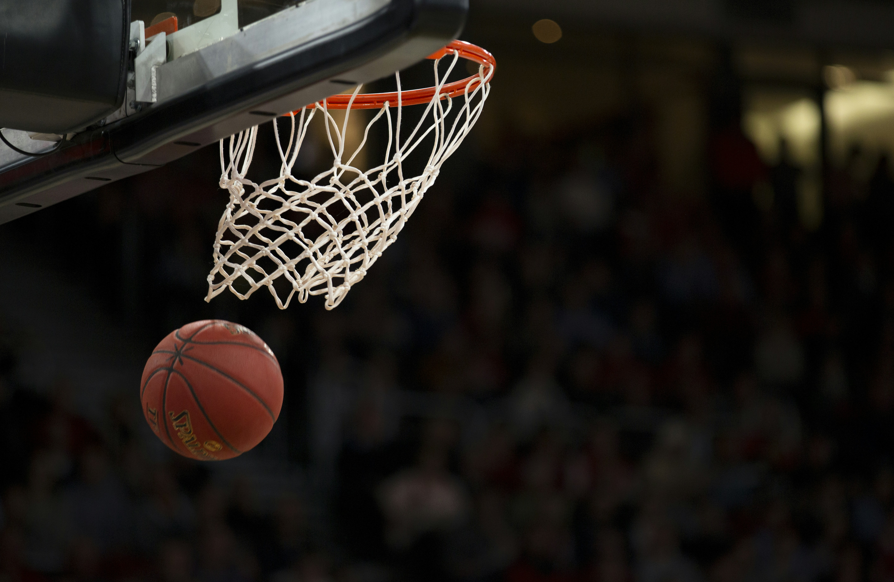

Gran jornada deportiva deja resultados decisivos en el torneo
Los equipos protagonistas protagonizaron una fecha intensa, con marcadores ajustados, actuaciones destacadas y nuevas expectativas de cara a las próximas competencias.
Los equipos protagonistas protagonizaron una fecha intensa, con marcadores ajustados, actuaciones destacadas y nuevas expectativas de cara a las próximas competencias.

Los entrenamientos y ajustes tácticos serán claves para los próximos encuentros.

El interés por competencias alternativas crece entre el público y los medios especializados.